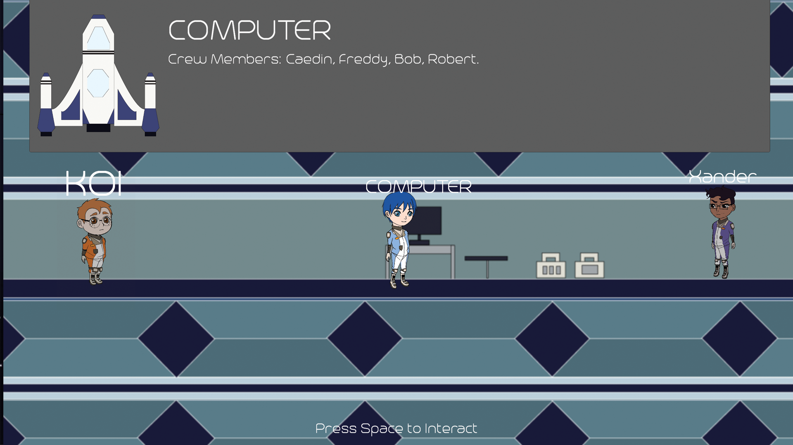
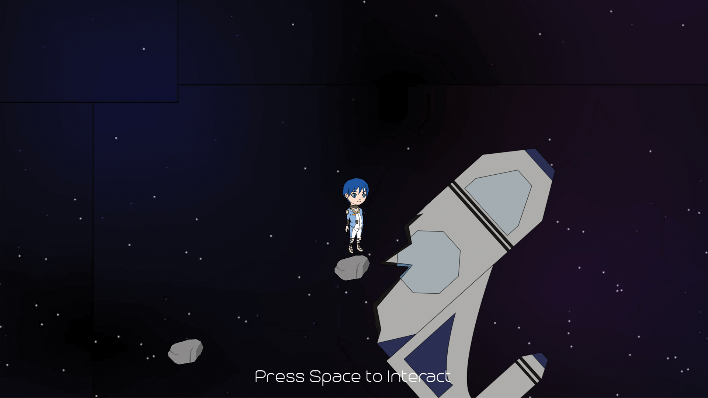
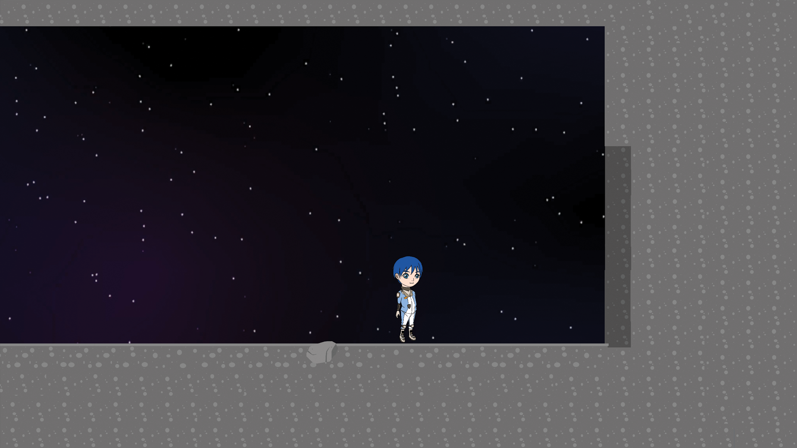
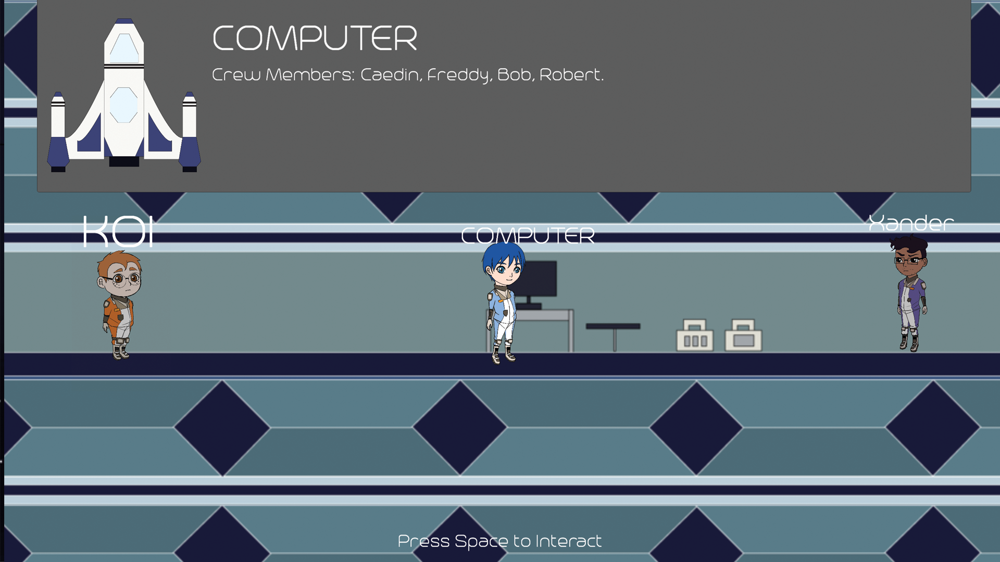
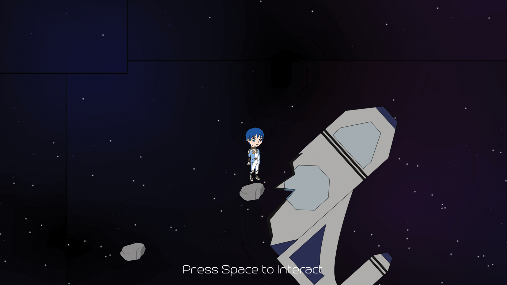
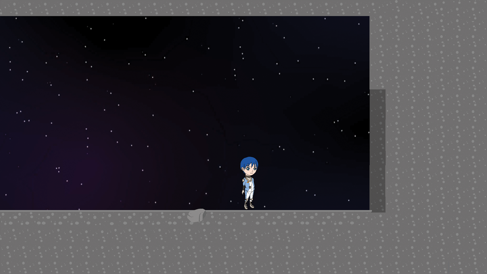
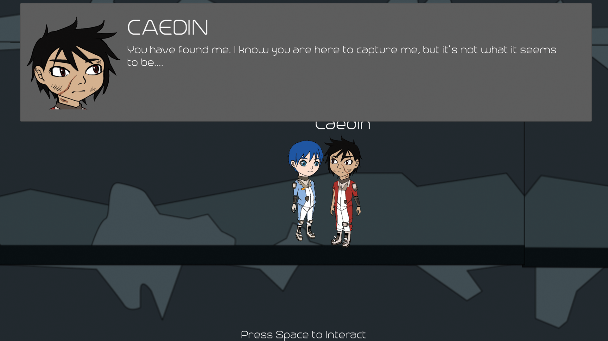
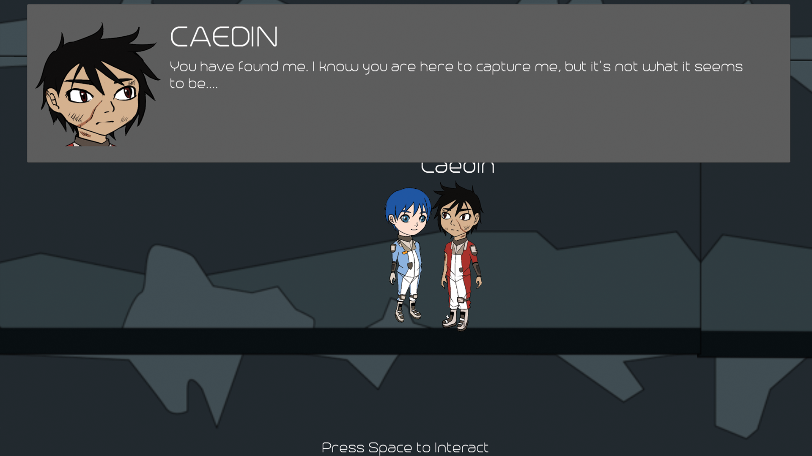

TONY CHEN
TONY CHEN

Furrmidable Foes
April 20, 2020
Summary
Furrmidable Foes is a 3D adventurer game
Format
Game Engine: Unity 2D
Team Size: Four
Development Time: 1 month during a school semester
Design Goals
To create a game around the theme of "Bounty".
Create a multiple ending storyline with story telling dialogue.
Roles and Tasks
Creative Director: Cordinating group tasks and conveying vision for the game.
Lead Designer: Collaborated with another designer to create a story and designed the levels.
Programmer: Game functionality, dialogue, and story events.
Design Implementation
You (Jace) is sent out on a mission to the Moon after the notice of a spaceship being sabotaged on the moon. There is a bounty on a crewmember who sabotaged the ship, and your mission is to capture the traitor and bring him back to Earth. Jace and his crew consisting of 2 other members are sent on this highly classified mission and complete the bounty.
As a designer, I wanted the game convey the sense of mystery since the theme of the game is bounty and behind every bounty, there is a story. The player is set on a mission to bounty hunt a person but the bounty is placed on him based on rumours of that he is the only person alive from a previous space mission. We wanted to hide the truth from the player and would have to explore the world to find the truth behind the mission.
As the lead programmer as well as design, I wanted to make sure that everything is within reach in within a 24 hour period. During the two day period, there were many stumps since it was the first time that I worked on a dialogue system.
Through mutilple hardships, we were able to complete majority of the game. For me, I grew a lot as a designer, more importantly as a leader. I led the team and kept everyone on track and organized. But sadly, we were not able to add animations to the game because our animators computer died and we were not able to retrieve the animations.
Downloads
Current Versions: Itch.io
 





 
